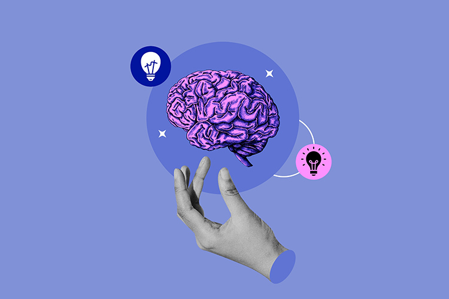
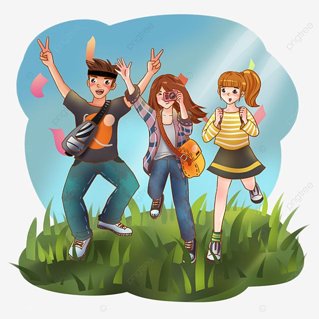
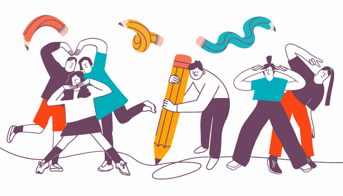
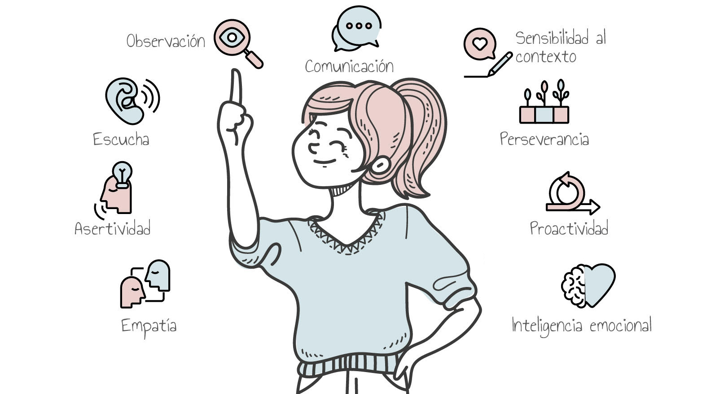

Sintoniza tu Mente
Tu mente, tu poder. Vibra alto.
Inicio
Esta página web fue creada con el objetivo de promover el bienestar emocional en jóvenes entre los 13 y 17 años. Aquí se ofrecen estrategias, actividades y herramientas para fortalecer la salud mental dentro y fuera del entorno escolar.
La metodología se basa en la participación activa, el trabajo en grupo, la expresión artística y la reflexión personal. Además, se invita a personas adultas a conocer y apoyar esta iniciativa que busca prevenir crisis emocionales y fortalecer la autoestima juvenil.


Actividades
- Estrategias Preventivas: Métodos prácticos para anticiparse a situaciones emocionales difíciles y fomentar el autocuidado.
- Dinámicas Grupales: Ejercicios participativos que fortalecen la confianza, la autoestima y la empatía entre compañeros.
- Espacios de Escucha Activa: Momentos seguros donde los participantes pueden expresar lo que sienten sin miedo a ser juzgados.
- Rutinas de Autoconocimiento: Actividades que promueven el reconocimiento y gestión de las emociones de forma positiva.
- Diario Personal: Herramienta íntima y poderosa para expresar pensamientos, emociones y reflexionar diariamente.
- Talleres Creativos: Espacios artísticos como música, arte y escritura para canalizar emociones y desarrollar talentos.


Herramientas
- Diario emocional digital o en formato físico
- Taller musical descargable con ejercicios de relajación
- Guía práctica de primeros auxilios emocionales
- Playlist con canciones para mejorar el estado de ánimo
- Videos y podcasts sobre salud mental dirigidos a jóvenes y padres

Videos
Disfruta contenido audiovisual para acompañar tu bienestar emocional.
Contáctanos
Para más información, unirse al proyecto o colaborar como adulto responsable, pueden comunicarse a través de los siguientes medios:
Email: sintonizatumemente@gmail.com
Teléfono: 321 483 2575
Instagram: @sintoniza_tu_mente
También puedes acercarte al grupo de salud mental estudiantil en tu institución educativa.